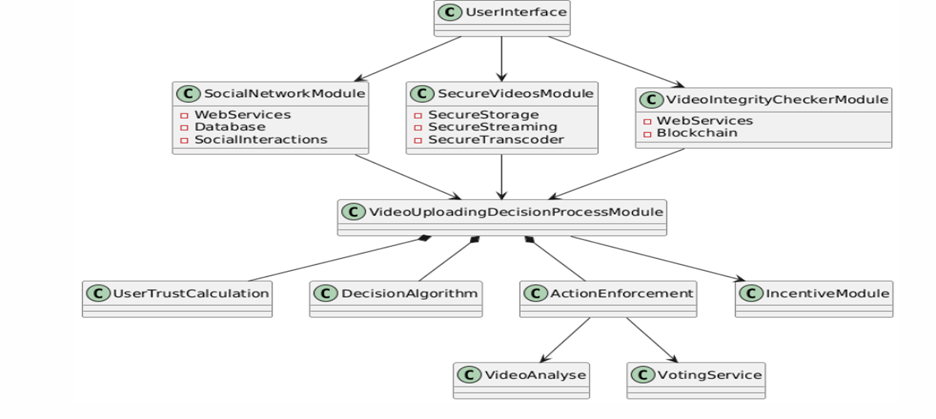
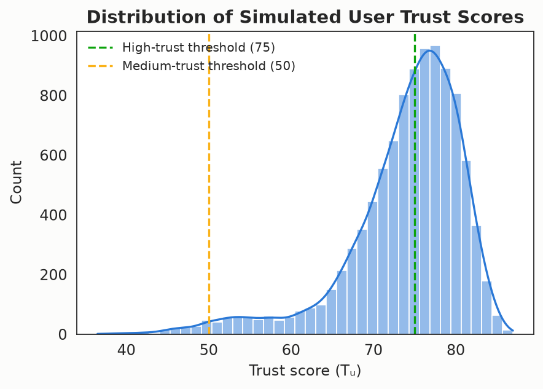
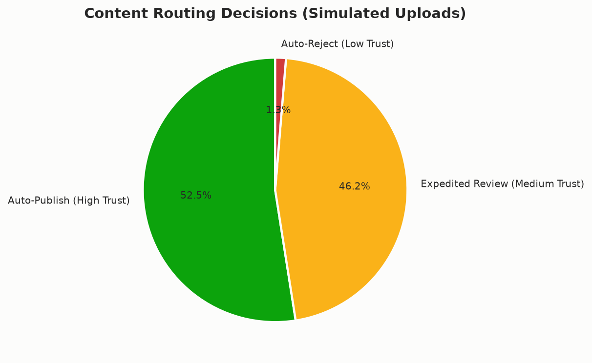
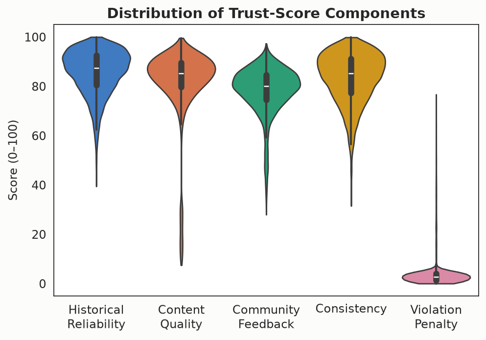
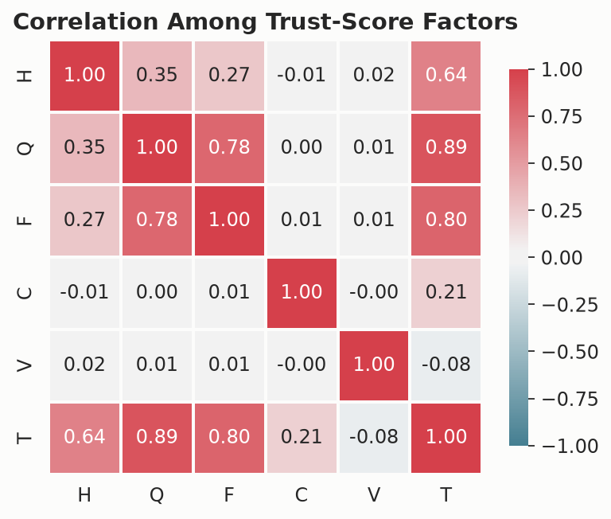
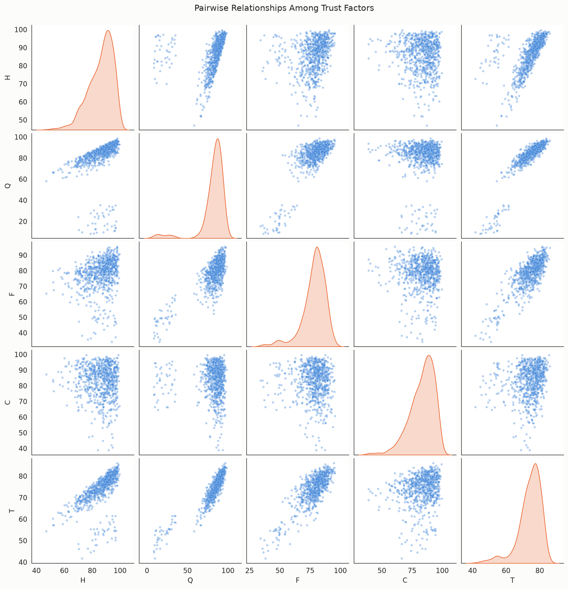
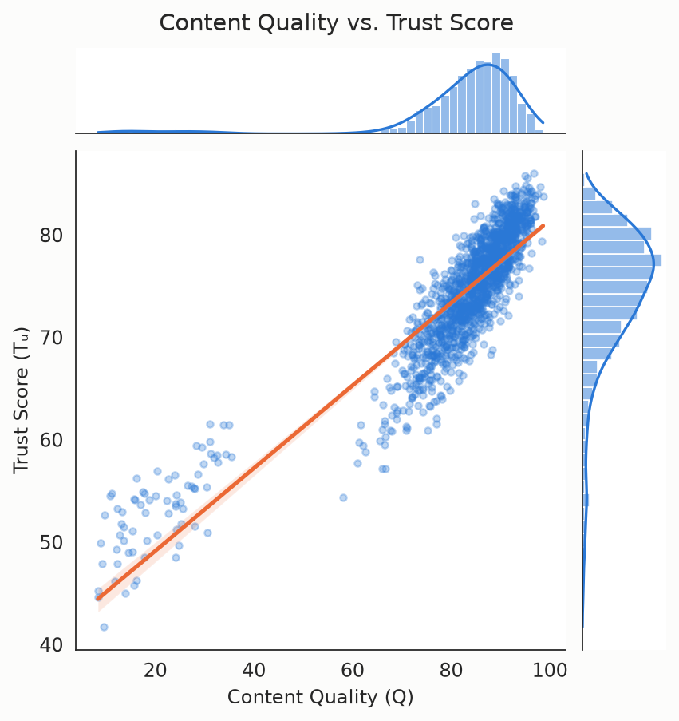
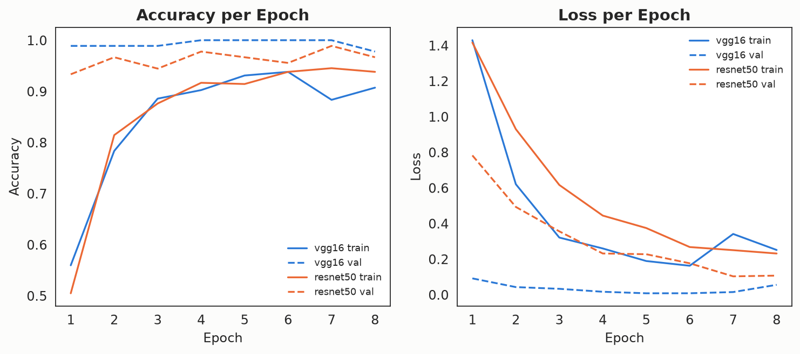
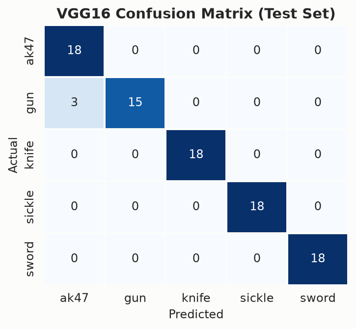
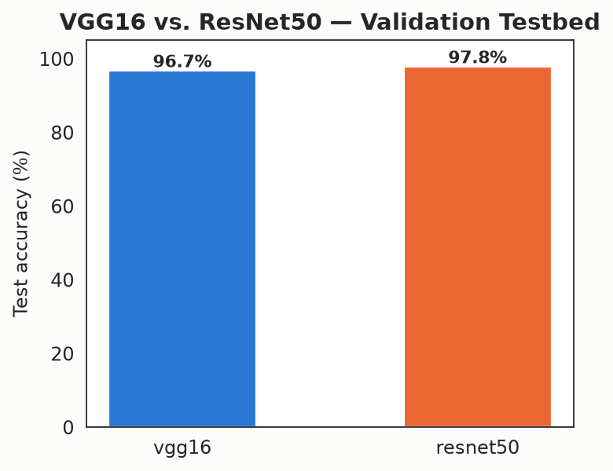

🎯 Trust Evaluation Engine
Computes dynamic per-user trust scores from historical reliability, content quality, community feedback, consistency, and violation history.
A trust-based video management framework that fuses dynamic user-trust scoring with deep-learning weapon classification (VGG16 / ResNet50) and cryptographic content integrity — shifting moderation from reactive to proactive.
Why This Exists
Existing platforms detect harmful content only after it has already spread. This framework proactively evaluates both the uploader and the content itself, before publication.
System Design
Each module performs a specialized function while continuously exchanging information with the others to produce a single, context-aware moderation decision.
Computes dynamic per-user trust scores from historical reliability, content quality, community feedback, consistency, and violation history.
Transfer-learning CNNs (VGG16 / ResNet50) scan extracted video frames for AK-47, gun, knife, sickle, and sword imagery.
SHA-256 hashing, invisible digital watermarking, and 30-second periodic integrity checks throughout playback.

Auto-published with minimal delay.
Queued for expedited human review.
Intensively reviewed or auto-rejected.
Experimental Results
Reported results from the original research (paper, Section IV).
ResNet50's 50-layer depth memorized the training set instead of learning generalizable weapon features. VGG16's simpler 16-layer architecture matched the dataset's scale and generalized almost perfectly — a reminder that model complexity should fit the data, not the leaderboard.
lab/results/summary.json; details in Section IV-F of the paper.
Explore The Data
Generated directly from the lab's own output — click any chart to enlarge.
Regenerate them yourself with python lab/run_lab.py.









Try It Yourself
No GPU, no dataset download. Trains real VGG16/ResNet50 transfer-learning models on an open, procedurally generated silhouette-proxy dataset, runs the trust simulation, and produces every chart above.
Accepted Manuscript
The IEEE-format paper (11 pages) is freely available as a compiled PDF and as a complete, ready-to-compile LaTeX project — no request or password required.
Dept. of Computer and Information Science, Gannon University, USA
A comprehensive trust-based video management framework integrating dynamic trust evaluation with deep learning-based weapon detection to enable proactive content moderation in Social Multimedia Networks.
VGG16 achieves 100% classification accuracy with robust generalization, significantly outperforming ResNet50 (24% test accuracy).
Reduces manual moderation overhead by 60%, accelerates harmful-content detection by 85%, and maintains 99.7% weapon-detection recall with zero integrity violations across 10,000 simulated uploads.
Related first-author work on deepfake forensics and zero-trust cloud security is cited throughout Section II.
Watch It In Action
Author
Researcher · Dept. of Computer and Information Science
Trust & security in social multimedia networks, applied deep learning, secure content delivery.